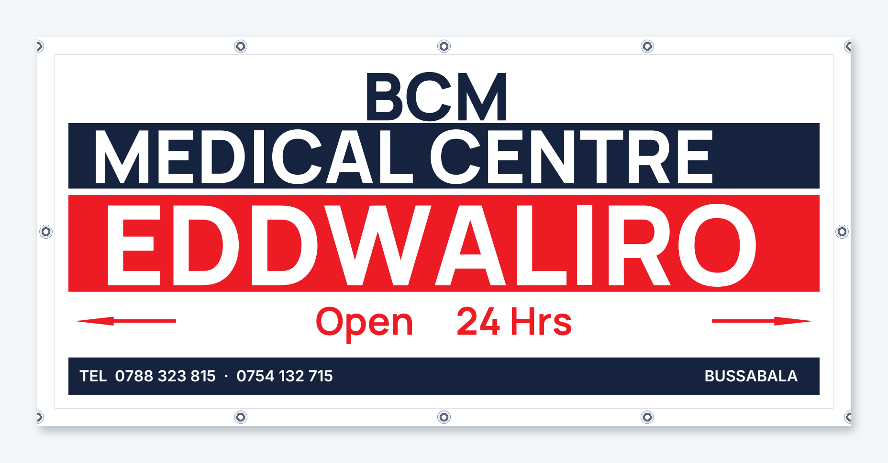
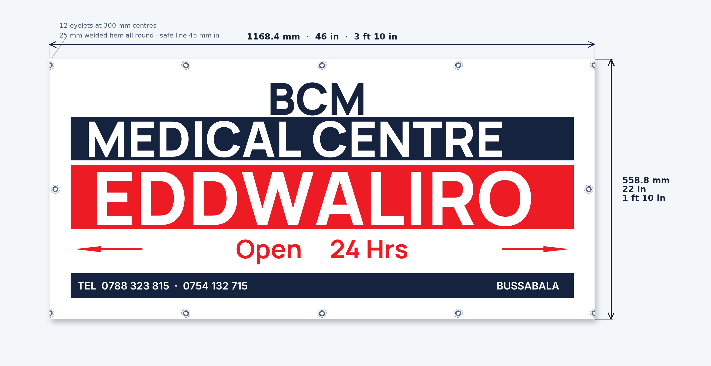

| File | What it is |
|---|---|
| BCM-Banner-1168x559mm-EXACT.pdf | The banner at exactly 46 × 22 in — page = trim |
| BCM-Banner-1168x559mm-BLEED.pdf | Print file — 10 mm bleed, crop marks, slug |
| READ-ME-FIRST.txt | Sizes, hem, eyelets, colours |
| BCM-Banner.pdf | Two pages — to scale, and the eyelet plan |
| BCM-Banner-Package.zip | Everything above |
Industry-typical hem and eyelet values — confirm with the printer. Nothing here is a quotation.